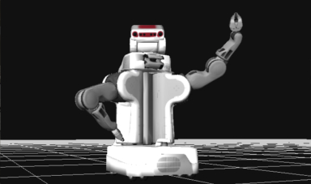

Tools Useful Libraries and Widgets for your Robots Libraries roslibjs The Standard ROS JavaScript Library CDN: (min) | (full) Doc: (JSDoc) Source: (GitHub) Wiki: (ROS Wiki) ros2djs 2D Visualization Library for use with the ROS JavaScript Libraries CDN: (min) | (full) Doc: (JSDoc) Source: (GitHub) Wiki: (ROS Wiki)  ros3djs 3D Visualization Library for use with the ROS JavaScript Libraries CDN: (min) | (full) Doc: (JSDoc) Source: (GitHub) Wiki: (ROS Wiki) Widgets nav2djs 2D Navigation Widget CDN: (min) | (full) Doc: (JSDoc) Source: (GitHub) Wiki: (ROS Wiki) keyboardteleopjs Keyboard Teleoperation via Twist Messages CDN: (min) | (full) Doc: (JSDoc) Source: (GitHub) Wiki: (ROS Wiki) mjpegcanvasjs Display a MJPEG stream from the ROS mjpeg_server Inside of a HTML5 Canvas CDN: (min) | (full) Doc: (JSDoc) Source: (GitHub) Wiki: (ROS Wiki) Systems rms RMS (Robot Management System) Doc: (JSDoc) | (PHPDoc) | (REST) Source: (GitHub) Wiki: (ROS Wiki) Server-Side rosbridge_suite Rosbridge 2.0 Server Source: (GitHub) Wiki: (ROS Wiki) mjpeg_server A MJPEG Server Which is Able to Subscribe to any ROS Image Stream.Source: (GitHub) Wiki: (ROS Wiki) tf2_web_republisher Republishing of Selected TF Transforms Source: (GitHub) Wiki: (ROS Wiki)